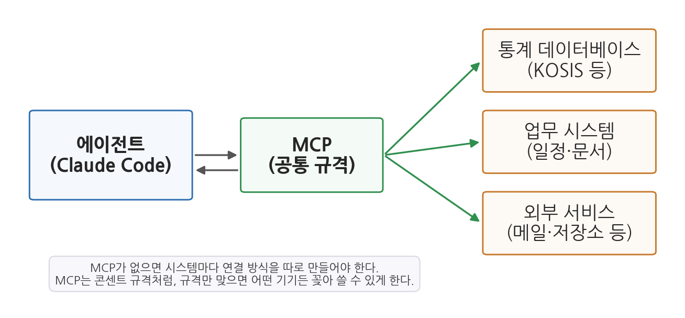
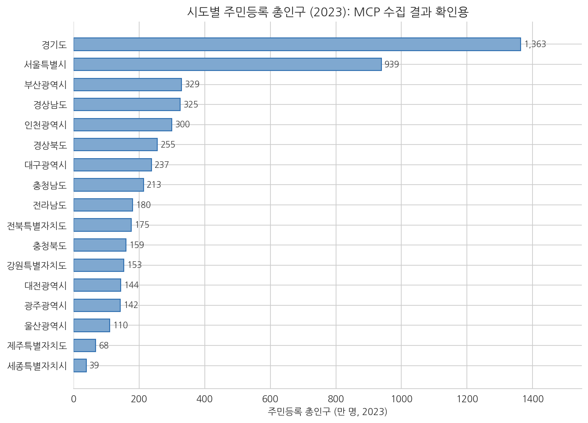
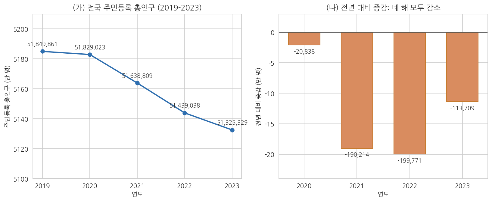
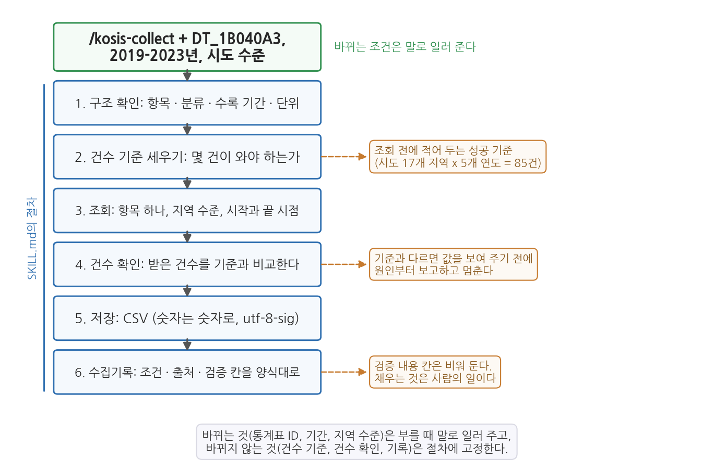

6주차 2회차. kosis MCP로 데이터 찾고 수집하기
최종 수정: 2026-10-07 · 이 교재는 학기 중에도 계속 업데이트됩니다
이 실습에서 하는 것
1회차에서 공공데이터의 소재(어디에 있나), 받기 전에 읽을 것(형식·메타데이터·이용허락), 그리고 에이전트에 외부 도구를 연결하는 표준(MCP)을 배웠다. 이번 실습은 그 내용을 적용해 실제로 데이터를 찾고 수집한다. 1회차에서 배운 개념은 그것이 필요한 단계에서 화면에 나온 결과를 놓고 다시 짚는다. 단계마다 있는 "먼저 알아 둘 것"과 "짚고 가기"가 그 자리다. 전반부에서는 에이전트의 웹 검색으로 데이터를 찾는 연습을 하고, 후반부에서는 kosis MCP 서버를 주소 한 줄로 등록해 에이전트가 KOSIS 통계를 직접 검색·수집하게 만든다. 수집은 같은 통계표에서 두 번 한다. 2023년 시도별 총인구(한 시점, 여러 지역)와 전국 총인구의 2019-2023년 추이(한 지역, 여러 시점)다. 수집한 값은 결정적 값 하나를 포털 화면과 맞춰 본 뒤 CSV와 수집기록으로 남기며, 4주차에 만든 csv-profile 스킬로 첫 진단까지 마친다. 마지막으로 두 번 반복한 수집 절차를 4주차에서 배운 방식대로 스킬 하나로 표준화하고, 그 스킬을 새 조건으로 한 번 돌려 시도별 다섯 해 치를 한꺼번에 받는다. 다음 데이터부터는 통계표와 조건만 말해 주면 같은 순서가 그대로 돌아간다.
이 실습이 끝나면 다음 산출물이 남는다.
- 에이전트의 웹 검색으로 찾은 데이터 후보 목록
- 에이전트에 등록된 kosis MCP 서버 (
/mcp로 확인 가능한 상태) data/sido_pop_2023.csv: MCP로 수집한 17개 시도의 2023년 주민등록 총인구data/korea_pop_2019_2023.csv: 전국 주민등록 총인구의 2019-2023년 추이수집기록.md: 언제, 어디서, 어떤 조건으로 받았는지의 기록 (수집 2건)산출물/프로파일_sido_pop_2023.md: 4주차 스킬로 만든 첫 진단 보고서.claude/skills/kosis-collect/: 오늘의 수집 절차를 표준화한 스킬 (SKILL.md와 참조 파일)data/sido_pop_2019_2023.csv: 그 스킬로 받은 시도별 총인구 2019-2023년 (17개 시도 곱하기 5개 연도, 85건)
준비물
| 구분 | 내용 |
|---|---|
| 폴더 | 1주차에 만든 공공데이터분석 폴더 (3주차에서 uv 환경을 갖춘 상태) |
| 데이터 | 실습 중 kosis MCP로 직접 수집 (별도 준비 없음) |
| 도구 | VSCode + Claude Code, 웹 브라우저 (링크 확인과 포털 화면 대조용) |
| 선수 내용 | 6주차 1회차 (포털 목록, 메타데이터, MCP), 4주차 2회차 (csv-profile 스킬 만들기), 2주차 (도구 호출 로그 읽기, 지시문의 검증 조건) |
2.1 포털에서 데이터 찾기: 사람의 탐색 + 에이전트의 웹 검색
무엇을 왜 하는가. 데이터 찾기의 첫걸음은 주제를 에이전트에게 주고 관련 데이터셋을 찾아 오게 하는 것이다. 에이전트는 여러 포털을 한꺼번에 훑어 후보 목록을 만들어 준다. 포털의 분류 체계와 메타데이터 화면은 에이전트가 가져온 링크를 열어 보면서 익힌다.
"나는 '지방 소멸과 청년 인구 유출'을 주제로 시군구 단위 분석을 해 보려는 행정학과 학생이야. 웹 검색으로 이 주제에 쓸 수 있는 한국 공공데이터셋 후보를 5개 안팎으로 찾아 줘. 후보마다 (1) 데이터셋 이름, (2) 제공 포털과 기관, (3) 파일 형식 또는 API 여부, (4) 시군구 단위인지, (5) 확인한 페이지 링크를 표로 정리해 줘. 확실하지 않은 항목은 추측하지 말고 '확인 필요'라고 적어 줘."
예상되는 에이전트의 행동과 결과. 에이전트가 웹 검색 도구를 여러 번 호출하면서(승인 요청이 올 수 있다) 공공데이터포털, KOSIS 등의 페이지를 확인하고, 요청한 다섯 항목이 채워진 후보 표를 만들어 준다. 결과 표는 대략 다음과 같은 모양이다. 후보의 내용은 실행할 때마다 조금씩 다르므로 표의 꼴만 보면 된다.
| 후보 | 데이터셋 | 포털·기관 | 형식·API | 시군구 단위 | 링크 |
|---|---|---|---|---|---|
| 1 | 주민등록 인구통계(행정구역별) | KOSIS · 행정안전부 자료 | 화면 다운로드, 오픈API | 예 | (에이전트가 적은 주소) |
| 2 | 국내인구이동통계(시군구 전입·전출) | KOSIS · 국가데이터처 | 화면 다운로드 | 확인 필요 | (에이전트가 적은 주소) |
| 3 | 지방자치단체 재정자립도 | 지방재정365 · 행정안전부 | 엑셀 다운로드 | 확인 필요 | (에이전트가 적은 주소) |
"확인 필요"가 섞여 있는 것은 지시문의 "추측하지 말고" 조건이 지켜졌다는 뜻이다.
표가 나오기까지 화면에서 일어난 일은 도구 사용 로그에 남는다. 로그를 펼치면 다음과 같은 묶음이 여러 번 이어진다.
[도구 호출] 웹 검색 검색어: "지방 소멸 청년 인구 유출 시군구 데이터"
[결과] 상위 결과 8건의 제목과 주소
[도구 호출] 웹 페이지 읽기 주소: (검색 결과의 포털 페이지)
[결과] 페이지에서 데이터셋 이름, 제공 기관, 파일 형식을 찾음
[도구 호출] 웹 페이지 읽기 주소: (다음 후보의 페이지)
[결과] 페이지를 열지 못함 -> 후보 표에 "확인 필요"로 표시
한 묶음은 도구 이름, 도구에 넘긴 조건(검색어나 주소), 돌아온 것의 요약 세 줄이다(2주차 도구 호출 로그). 후보 표의 어느 줄이 실제로 페이지를 열어 확인한 것이고 어느 줄이 검색 결과 제목만 보고 적은 것인지는 표가 아니라 로그에서 갈린다. 세 번째 묶음처럼 페이지를 열지 못한 자리가 있으면 그 후보의 링크는 열리지 않을 가능성이 가장 높다.
짚고 가기: 후보 표의 포털 열이 공공데이터의 소재를 보여 준다. 방금 나온 후보 표의 세 번째 열을 보면 같은 주제의 데이터인데 출처가 KOSIS, 지방재정365처럼 서로 다른 포털로 갈린다. 한국의 공공데이터가 한 곳에 모여 있지 않기 때문이고, 흩어져 있는 이유는 무질서가 아니라 데이터의 성격이다. 통계는 통계를 만드는 기관이, 재정은 재정을 관리하는 기관이 가장 정확한 원천이다. 그래서 무엇이든 일단 찾아보는 종합 창구(공공데이터포털)가 하나 있고, 주제가 분명할 때 바로 가는 전문 창구들이 따로 있다. 공식 통계 수치가 필요하면 KOSIS, 지자체 살림살이가 궁금하면 지방재정365, 거시경제 지표는 한국은행 ECOS, 공공기관 경영정보는 ALIO, 근거 조문은 국가법령정보센터, 개방되지 않은 자료를 요청하려면 정보공개포털이다.
공공데이터포털과 KOSIS의 성격 차이도 이 구조에서 나온다. 공공데이터포털이 여러 기관이 개방한 자료를 모은 종합 창구라면, KOSIS는 품질 관리를 거친 공식 통계를 제공하는 전문 창구다. 오늘 후반부에서 KOSIS를 수집 대상으로 삼는 이유가 여기에 있다. 포털 화면과 메뉴 이름은 수시로 바뀌므로 외울 것은 클릭 순서가 아니라 "이런 성격의 데이터는 이런 성격의 기관이 낸다"는 구조다. (자세한 설명은 1회차 1.1, 표 6-1)
검증. 에이전트가 준 링크를 브라우저에서 열어 데이터셋 이름이 표의 설명과 같은지 보고, 열리지 않는 링크는 목록에서 뺀다.
2.2 kosis MCP 등록하고 연결 확인하기
무엇을 왜 하는가. 이제 1회차 1.5절에서 배운 등록을 실제로 한다. kosis MCP 서버는 KOSIS의 통계를 검색·조회하는 도구들을 에이전트에게 더해 주는 시범서비스로, 인증키 발급도 회원가입도 필요 없이 주소만으로 등록된다.
먼저 알아 둘 것. 서버를 등록하는 일은 에이전트에 새로운 실행 능력을 추가하는 일이므로, 주소를 입력하기 전에 세 가지를 점검하고 들어간다. ① 운영 주체가 확인되는가. 오늘 연결할 서버는 수업에서 안내한, 국가통계포털(KOSIS) 기반으로 운영되는 실습용 시범서비스다. ② 무엇을 할 수 있는 서버인가. 통계를 검색하고 조회하는 읽기 전용 도구들이고, 내 파일을 고치거나 지우는 능력은 없다. ③ 꼭 필요한가. 오늘 수집 실습의 핵심 도구다. 이 점검을 건너뛰면 안 되는 이유는 검증되지 않은 서버가 잘못된 데이터를 주거나, 밖에서 가져온 내용 속에 숨긴 지시문으로 에이전트의 행동을 유도하려 할 수 있기 때문이다. 세 점검을 통과했으니 연결한다. (자세한 설명은 1회차 1.5)
등록도 이 과목의 방식대로 에이전트에게 시킨다. 등록 명령(claude mcp add)은 터미널 명령이지만, 터미널을 다루는 것이야말로 에이전트의 일이다(2주차). 대화창에 다음과 같이 지시한다.
"kosis MCP 서버를 등록해 줘. 원격 HTTP 서버이고, 이름은 kosis, 주소는 https://kosismcp2026.vercel.app/api/mcp 야. claude mcp add 명령으로 등록하되, 나는 이 서버를 다른 프로젝트 폴더에서도 쓸 것이니 사용자 범위(user scope)로 등록해 줘. 그리고 실행한 명령과 결과 메시지를 그대로 보여 줘."
예상되는 에이전트의 행동과 결과. 에이전트가 터미널에서 다음 한 줄을 실행한다. 실행 전에 승인 요청이 뜨는데, 승인 기준은 3주차와 같다. 명령 속 주소가 내가 알려 준 바로 그 주소인지 읽고 승인한다.
claude mcp add --transport http --scope user kosis https://kosismcp2026.vercel.app/api/mcp
터미널에 서버가 추가되었다는 확인 메시지가 나온다. 문구는 버전마다 조금 다르지만 서버 이름과 주소, 등록 범위(사용자 범위)가 함께 표시되고, 에이전트가 "새 세션부터 인식된다"는 설명을 덧붙인다. 새로 등록한 서버는 새 세션부터 인식되므로 Claude Code를 재시작한다(4주차에서 스킬 폴더를 새로 만들었을 때와 같다). 그다음 대화창에 /mcp를 입력하면 등록된 서버 목록에 kosis가 보이고, 연결 상태와 이 서버가 제공하는 도구들을 확인할 수 있다. 화면 구성은 버전마다 다르지만 대체로 다음과 같은 정보가 보인다.
MCP 서버
kosis 연결됨 http https://kosismcp2026.vercel.app/api/mcp
kosis 서버의 도구 (일부)
kosis_search 통계·통계표 검색
kosis_local_search 지역·지자체 통계 검색
kosis_table_info 통계표의 항목·분류·기간 확인
kosis_get_data 통계값 조회
도구 이름은 서버 개편에 따라 바뀔 수 있고 이 밖에도 몇 개가 더 있지만, 오늘 필요한 것은 찾는 도구(검색), 표의 구조를 읽는 도구(구조 확인), 값을 받는 도구(조회)의 셋이다. 이 이름들은 잠시 뒤 도구 사용 로그에 나타난다.
짚고 가기: 방금 화면에 늘어난 도구 목록이 MCP가 한 일이다. 지금 /mcp 화면 아래쪽에 보이는 네 줄이 오늘 등록으로 생긴 변화의 전부다. 어제까지 에이전트가 쓸 수 있던 도구는 내 노트북 안의 파일과 터미널, 그리고 웹 검색이었다. 거기에 통계 검색, 지역 통계 검색, 통계표 구조 확인, 통계값 조회라는 네 개가 나란히 더해졌다. MCP(Model Context Protocol)는 에이전트를 외부 도구·데이터베이스·서비스와 연결하기 위한 개방형 표준이고, 이 표준을 따르는 연결 통로를 MCP 서버라고 부른다. 규격이 통일되어 있으므로 MCP 규격을 따르는 서버는 종류와 관계없이 주소 한 줄로 연결된다.

그림 6-2를 화면과 맞춰 읽는다. 왼쪽의 에이전트가 여러분의 Claude Code이고, 가운데의 MCP가 방금 claude mcp add로 연결한 규격이며, 오른쪽 맨 위의 통계 데이터베이스(KOSIS 등)가 kosis 서버가 닿아 있는 곳이다. 오른쪽의 다른 상자들, 곧 업무 시스템이나 메일·저장소 같은 외부 서비스도 같은 방식으로 연결된다. 여기서 알 수 있는 것은 에이전트 입장에서 오른쪽에 무엇이 연결되든 대화 방식이 같다는 점이다. 그래서 잠시 뒤 여러분은 KOSIS의 인증키를 발급받거나 API 문서를 읽지 않고도, 파일을 읽어 달라고 말하듯 통계를 받아 달라고 말하게 된다. 다만 오른쪽에 연결되는 것이 읽기 전용 통계 조회일 수도, 파일을 지우거나 메일을 보내는 서버일 수도 있다는 점이 등록 전 신뢰 점검을 세 가지나 거친 이유다. (자세한 설명은 1회차 1.4)
등록 범위. MCP 서버 등록은 저장되는 범위가 셋이다. 지금 연 프로젝트 폴더에서 나만 쓰는 local, 프로젝트 폴더의 설정 파일에 남아 폴더를 함께 쓰는 사람에게 전달되는 project, 내 계정 전체에 남아 어느 폴더를 열어도 보이는 user다. 오늘의 kosis 서버는 다른 폴더에서도, 12주차 실습에서도 쓰므로 위 지시문에서 user로 등록하게 했다. 화면에서 읽을 것은 셋이다. 이름이 kosis인가, 주소가 내가 준 주소인가, 범위가 사용자인가. 재시작한 뒤 다른 폴더를 열어 /mcp를 눌러 보면 kosis가 그대로 보이고, 이것이 범위가 사용자로 잡혔다는 화면 증거다.
등록 성공과 연결됨은 서로 다른 상태다. 등록 성공은 "주소를 적어 두었다"는 뜻이고 연결됨은 "그 주소에 실제로 서버가 있고 대화가 된다"는 뜻이다. 등록 명령은 주소를 받아 적을 뿐 그 주소에 서버가 있는지 확인하지 않으므로, 주소에 오타가 있어도 등록 자체는 성공한다. 차이는 /mcp 화면에서 드러난다. 그러니 연결이 되지 않을 때 가장 먼저 의심할 것은 서버가 아니라 주소의 오타이며, 화면의 메시지에 주소가 통째로 다시 적혀 있으므로 그것을 내가 준 주소와 한 글자씩 대조하는 것이 첫 걸음이다.
검증. 재시작 후 /mcp 화면에서 kosis가 연결됨이고 검색·구조 확인·조회 도구가 보이는지 본다.
2.3 통계표 찾고 메타데이터 읽기: 이 표가 내 질문에 맞는가
무엇을 왜 하는가. 1회차 1.2절의 원칙, 곧 숫자보다 메타데이터를 먼저 읽는다는 원칙을 MCP 수집에도 적용한다. 포털 화면으로 받을 때는 항목 선택 창과 시점 선택 창을 지나야 숫자에 닿으므로 메타데이터를 싫어도 보게 되지만, MCP로 받으면 그 화면이 사라지고 숫자만 온다. 편리함의 대가로 "이 숫자가 어떤 표의 어떤 항목인가"를 지나칠 위험이 생기므로, 수집 전에 표를 고르고 읽는 단계를 일부러 따로 둔다. 연습 주제는 "2023년 시도별 주민등록 총인구"다. 2주차에서 배운 대로 작업을 나누어, 이 단계에서는 값을 받지 않고 "어느 표를 쓸 것인가"만 결정한다.
"kosis MCP의 검색 도구로 '주민등록 인구' 관련 통계표를 찾아서 후보를 3개 이내로 보여 줘. 그중 시도별 총인구를 연도 단위로 조회할 수 있는 표 하나를 골라, 통계표 구조 확인 도구로 (1) 통계표 이름과 ID, 작성 기관, (2) 항목 목록, (3) 분류(지역 구분의 계층), (4) 수록 기간과 주기, (5) 단위를 알려 줘. 아직 값은 조회하지 마. 그 표를 고른 이유와, 이 표로는 답할 수 없는 것이 있으면 함께 적어 줘."
예상되는 에이전트의 행동과 결과. 도구 사용 로그에 검색 도구 호출이 먼저, 구조 확인 도구 호출이 이어서 나타난다. 로그를 펼치면 두 호출의 모양은 다음과 같다.
[도구 호출] kosis_search keyword: "주민등록 인구"
[결과] 통계표 후보 목록. 줄마다 표 이름과 ID가 하나씩
[도구 호출] kosis_table_info 통계표 ID: DT_1B040A3
[결과] 항목 목록 / 분류(행정구역) 목록 / 수록 기간 / 단위
넘긴 조건의 이름은 서버 버전에 따라 조금씩 다르게 표시되지만, 무엇을 넘겼는지는 이렇게 두세 줄로 읽을 수 있다. 검색 도구에는 말(검색어)을 넘기고 구조 확인 도구에는 ID를 넘긴다는 차이가 있다. 검색어는 결과가 달라질 수 있고 ID는 항상 같은 표를 가리킨다는 점은 이 절 끝의 유의 박스에서 다룬다. 저자가 실제로 수행했을 때 에이전트는 "행정구역(시군구)별 성별 인구수"(통계표 ID DT_1B040A3)를 골랐다. 주민등록인구현황 통계에 속한 표로, 원자료는 행정안전부의 주민등록 자료이고 KOSIS(국가데이터처(옛 통계청) 운영)에 수록되어 있다. 구조 확인 결과는 대략 다음 모양으로 정리되어 온다. 여러분 화면에서 확인해야 하는 값은 ○로 비워 두었다.
[검색] 후보 1. 행정구역(시군구)별 성별 인구수 (DT_1B040A3) <- 선택
후보 2. (다른 주민등록 관련 표)
[구조] 항목: 총인구수(T20), 남자인구수, 여자인구수 단위: 명
분류: 행정구역(시군구)별. 전국 > 시도 > 시군구의 계층
수록 기간: ○○○○년 - ○○○○년 (연도별)
[이유] 시도 수준의 총인구를 연도 단위로 조회할 수 있고, 주민등록 기준이다.
[한계] 주민등록에 없는 거주자(외국인 등)는 포함되지 않는다.
여기서 읽을 것이 셋 있다. 첫째, 항목이다. 총인구수 말고 성별 항목도 있으므로, 조회할 때 총인구수를 지정하지 않으면 남자·여자 값이 섞여 올 수 있다. 둘째, 분류의 계층이다. 표 이름에 "시군구"가 들어 있듯 이 표는 전국, 시도, 시군구를 한 계층 구조로 담고 있고, 우리는 그중 시도 수준만 원한다. 다음 단계에서 시도 수준을 지정해야 하는 이유가 이 계층에 있다. 셋째, 기준이다. 주민등록 기준 인구는 인구총조사 기준 인구와 다르다.
짚고 가기: 아직 숫자는 한 개도 오지 않았다. 구조 확인 도구가 돌려준 위의 [구조] 세 줄에는 통계값이 하나도 없고 항목 이름, 분류의 계층, 수록 기간, 단위만 있다. 이것이 메타데이터이고, 숫자보다 먼저 읽어야 하는 것이다. 데이터에는 값에 앞서 읽어야 할 설명 정보가 붙어 있다.
메타데이터(metadata)는 데이터 자체가 아니라 데이터에 대한 설명 정보다. 누가 만들었고(생산 기관), 언제 기준이며(기준 시점), 얼마나 자주 갱신되고(갱신 주기), 단위가 무엇인지 등이 담긴다. 포털의 데이터셋 상세 화면에 표 형태로 제시되는 것이 보통이다.
코드북(codebook)은 그중에서도 각 열(변수)의 정의를 적은 문서다. 열 이름이 무슨 뜻인지, 값이 어떤 코드로 적혀 있는지(예: 성별 1=남, 2=여), 어떤 산식으로 계산되었는지를 알려 준다.
왜 숫자보다 먼저인지는 위 결과의 "항목: 총인구수(T20)"만 보아도 드러난다. T20이라는 코드가 무엇을 세는 것인지는 값 안에 없고 표의 설명에 있다. 이 표가 내 질문에 맞는지는 여섯 항목으로 따진다. ① 생산 기관과 원천(같은 "인구"라도 주민등록 기준과 인구총조사 기준은 값이 다르다), ② 기준 시점, ③ 단위와 산식, ④ 범위(내가 원하는 지역이 모두 있는가, 원하지 않는 계층이 섞이지는 않는가), ⑤ 갱신 주기와 이력(과거 값이 소급 수정되기도 하는가), ⑥ 이용허락과 출처 표시다. 앞의 다섯은 데이터가 내 질문에 맞는지를 묻고, 마지막 하나는 그 데이터를 내 보고서에 써도 되는지를 묻는다. 우리 공공기관은 개방 저작물에 공공누리(KOGL)라는 표준 이용허락 표시를 붙이는데, 네 유형 모두 출처 표시가 공통 의무이고 유형에 따라 상업적 이용과 변경이 갈린다. 수업 과제는 상업적 이용이 아니므로 제약은 드물지만 출처 표시에는 예외가 없다. 여섯 항목이 어긋난 채 분석하면 코드가 완벽해도 결론이 틀린다. 표 6-4가 저자의 판정 결과다. (자세한 설명은 1회차 1.2, 표 6-3)
표 6-4. 통계표 적합성 판정표 (DT_1B040A3, 저자가 확인한 예)
| 확인 항목 | 내 질문에 필요한 것 | 이 표에서 확인한 것 | 판정 |
|---|---|---|---|
| 생산 기관과 원천 | 주민등록 기준 인구 | 행정안전부 주민등록 자료, KOSIS 수록 | 맞음 |
| 기준 시점과 기간 | 2023년, 가능하면 여러 해 | 연도별 수록. 2019-2023년 다섯 해 조회 가능 (2.6에서 확인) | 맞음 |
| 단위와 산식 | 명 단위의 총인구 | 단위 명, 항목 총인구수 (남자+여자) | 맞음 |
| 범위와 분류 | 17개 시도 전체 | 전국 > 시도 > 시군구 계층. 시도 수준만 지정해야 함 | 맞음 (조건부) |
| 갱신 주기와 이력 | 나중에 갱신할 가능성 | MCP 응답에는 없다. KOSIS 화면의 수록 정보에 있다 | 화면에서 확인 |
| 이용허락과 출처 표시 | 보고서 인용 가능 | MCP 응답에는 없다. KOSIS 화면에 공공누리 유형이 있다 | 화면에서 확인 |
검증. 구조 확인 결과의 통계표 ID가 DT_1B040A3이고 항목에 총인구수가 들어 있는지 본다.
같은 통계를 찾더라도 검색어를 바꾸면 다른 표가 나온다. "인구"처럼 넓은 말에는 주민등록 계열뿐 아니라 인구총조사 계열이나 장래인구추계 계열의 표가 함께 걸리고, "주민등록 인구"처럼 기준을 명시한 말은 후보를 줄여 준다. 검색어에 조사 이름이나 기준을 한 마디 넣으면 검색 범위가 좁아진다. 검색어는 사람이 기억하기 쉬운 대신 결과가 흔들리고, 통계표 ID(DT_1B040A3)는 외우기 어려운 대신 언제나 같은 표를 가리킨다. 그래서 한 번 찾은 표는 이름이 아니라 ID로 부르고, 수집기록에도 ID를 반드시 남긴다. 2.5의 수집기록에 통계표 이름과 ID를 함께 적는 칸이 있는 이유이며, 2.8에서 만들 스킬에 검색어가 아니라 ID를 일러 주는 이유이기도 하다. 검색은 처음 한 번이고, 그다음부터는 ID다.
2.4 MCP로 통계 수집하기: 2023년 시도별 총인구
무엇을 왜 하는가. 표를 골랐으니 값을 받는다. 2.3에서 표를 정하고 여기서 값을 받도록 나눈 것은, 문제가 생겼을 때 어느 단계의 문제인지 가리기 위해서다. 이 단계에서는 값을 받는 데까지만 하고 저장은 다음 절에서 한다.
"kosis MCP를 써서 2023년 시도별 주민등록 총인구를 수집해 줘. (1) 통계표는 2.3에서 확인한 '행정구역(시군구)별 성별 인구수'(DT_1B040A3)를 쓰고, 다른 표를 써야 한다면 이유를 먼저 말해 줘. (2) 그 통계표에서 전국과 17개 시도의 총인구수를 조회해 표로 보여 줘. (3) 값의 출처(통계표명과 KOSIS 링크)도 함께 남겨 줘. 아직 파일로 저장하지는 마."
예상되는 에이전트의 행동과 결과. 도구 사용 로그에 kosis 서버의 조회 도구 호출이 나타난다(승인 요청이 올 수 있다). 저자가 이 실습을 실제로 수행했을 때, 에이전트는 통계표 DT_1B040A3에서 2023년 총인구수를 조회 도구로 받아 왔다. 결과는 전국과 17개 시도, 합해서 18건이며 단위는 명이다. 로그에서 조회 호출 하나를 펼치면 다음과 같이 보인다.
[도구 호출] kosis_get_data
통계표: DT_1B040A3
항목: 총인구수
분류: 행정구역(시군구)별 - 시도 수준
기간: 2023년 - 2023년
[결과] 18행. 앞의 세 줄은 다음과 같다
전국 2023 51325329
서울특별시 2023 9386034
부산광역시 2023 3293362
여기서 읽을 것이 둘 있다. 첫째, 도구에 넘긴 조건이 네 줄로 보인다는 점이다. 통계표, 항목, 분류, 기간이며 2.3에서 읽은 메타데이터가 그대로 조건이 되었다. 결과가 기대와 다를 때 고칠 자리는 이 네 줄이다. 둘째, 돌아온 값은 쉼표 없는 숫자라는 점이다. 51325329처럼 오는 값에 사람이 읽기 좋은 쉼표를 붙이는 것은 에이전트가 표로 정리하면서 하는 일이다. 파일에 저장할 때는 다시 쉼표 없는 숫자여야 한다는 것을 2.5에서 다룬다. 대화창에 정리되어 나오는 표의 첫 부분은 다음과 같은 모양이 된다.
| 지역 | 총인구수 (2023, 명) |
|---|---|
| 전국 | 51,325,329 |
| 서울특별시 | 9,386,034 |
| 부산광역시 | 3,293,362 |
| ... | ... |
표 아래에 통계표명과 KOSIS 링크가 붙고, 응답 첫머리에는 아래 유의 박스의 안내문이 붙는다.
짚고 가기: API 방식과 MCP 방식의 차이. 방금 한 일에서 하지 않은 일이 있다. 인증키를 발급받지 않았고, API 문서를 읽지 않았고, 수집 코드를 짜지 않았다. 원래 프로그램이 다른 시스템의 데이터를 받아 오는 통로는 API(application programming interface)였다. 웹페이지가 사람이 읽는 인터페이스라면 API는 프로그램이 읽는 인터페이스로, 화면 장식 없이 데이터만 약속된 형식으로 오간다. KOSIS도 오픈API를 제공하므로 전통적인 방법으로도 이 값을 받을 수 있지만, 그러려면 키를 발급받아 관리하고, 문서를 읽어 파라미터 이름을 알아내고, 요청 주소를 조립하는 코드를 짜서 고쳐 가며 돌려야 한다. 조회 조건이 코드에 글자로 남아 재현성은 해결되지만 준비해야 할 것이 많은 방식이다.
MCP는 이 준비 과정을 없앤다. 위 로그의 네 줄(통계표, 항목, 분류, 기간)은 원래 사람이 문서를 읽어 가며 조립해야 했던 요청의 핵심 내용인데, 지금은 에이전트가 도구에 그대로 넘기는 조건이 되어 있다. 문서를 주는 대신 도구를 연결했기 때문이다. (자세한 설명은 1회차 1.3, 1.4)
kosis MCP를 쓴 답변에는 "시범서비스 안내"라는 문구와 통계표 출처 링크가 함께 붙는 것을 보게 된다. MCP 서버는 데이터만 주는 것이 아니라 그 데이터를 다루는 안내와 지시도 에이전트에게 함께 전달할 수 있고, 에이전트는 그것을 따른다. 지금처럼 출처를 밝히고 한계를 고지하는 안내라면 문제가 없지만, 뒤집어 생각하면 1회차의 경고 그대로다. 신뢰할 수 없는 서버가 이 통로로 나쁜 지시를 흘려 넣을 수도 있다. 서버를 가려 연결해야 하는 이유가 이 통로에 있다. 이 안내문의 출처 링크와 한계 고지는 수집기록에 옮길 항목이기도 하다.
검증. 건수가 전국 1건 + 시도 17건 = 18건인지 센다.
2.5 수집 결과 검증과 저장: 화면 대조, CSV, 수집기록
무엇을 왜 하는가. 데이터가 왔으므로 저장한다. 저장하기 전에 결정적 값 하나를 포털 화면과 맞추고, 시도 합계가 전국 값과 같은지 에이전트에게 비교시키고, 수집기록을 남긴다.
첫째, 값이 포털 화면과 같은가. 2.3에서 열어 둔 KOSIS 통계표에서 항목은 총인구수, 시점은 2023년, 행정구역은 전국만 남기고 조회해 화면의 값이 에이전트가 받은 전국 51,325,329명과 자릿수까지 같은지 본다.
둘째, 시도 합계가 전국 값과 같은가. 이 데이터에는 전국 값과 17개 시도 값이 함께 들어 있으므로, 시도를 다 더하면 전국이 되어야 한다. 이 비교를 저장 지시문에 조건으로 넣는다.
"방금 받은 17개 시도의 총인구수를 모두 더한 값과, 전국의 총인구수 값을 나란히 출력하고 같은지 비교해 줘. 같으면 시도 데이터를 시도·연도·총인구 세 개 열의 표로 정리해서 data/sido_pop_2023.csv 로 저장해 줘. 총인구는 문자열이 아니라 숫자로, 엑셀에서 열어도 한글이 깨지지 않는 인코딩(utf-8-sig)으로 저장하고, 저장 후 파일의 처음 5행을 출력해 줘. 그리고 시도별 총인구를 큰 순서대로 가로 막대그래프로 그려 산출물 폴더에 저장해 줘. 제목과 축에 단위(만 명)와 연도(2023)를 표시해 줘."
예상되는 에이전트의 행동과 결과. 에이전트가 짧은 파이썬 코드를 만들어 uv 환경에서 실행한다. 도구 사용 로그에는 MCP 호출 대신 코드 실행과 파일 쓰기가 나타난다. 이미 받은 값을 다루는 일이므로 새 조회는 없다. 대화창에는 합계와 전국 값의 비교, 파일의 처음 5행, 그림 저장 보고가 순서대로 온다. 저자의 실행에서 17개 시도의 합은 51,325,329명으로 전국 값과 정확히 일치했다. 저장 형식을 CSV로 고른 것은 첫 줄에 열 이름을 쓰고 그다음 줄부터 값을 쉼표로 구분해 적은 텍스트 파일이라 어떤 프로그램에서든 오해 없이 읽히기 때문이다. 대신 CSV에는 인코딩이라는 주의할 점이 하나 붙고, 지시문에 적어 준 utf-8-sig가 엑셀에서 한글이 깨지지 않게 하는 그 지정이다(1회차 1.2, 표 6-2). 저장된 CSV의 첫 다섯 행은 다음과 같았다.
표 6-5. data/sido_pop_2023.csv의 첫 다섯 행 (실제 수집 결과)
| 시도 | 연도 | 총인구 |
|---|---|---|
| 경기도 | 2023 | 13630821 |
| 서울특별시 | 2023 | 9386034 |
| 부산광역시 | 2023 | 3293362 |
| 경상남도 | 2023 | 3251158 |
| 인천광역시 | 2023 | 2997410 |

그림 6-3을 읽는다. 가로 막대는 시도별 주민등록 총인구(만 명)이고, 경기(약 1,363만)와 서울(약 939만)이 압도적으로 크며 세종(약 39만)이 가장 작다. 이 그림은 분석이 아니라 수집한 값을 한눈에 보는 용도다. 파일에는 원래 값(명 단위)을 그대로 두고, 만 명으로 줄여 읽는 일은 그림과 문장에서만 한다.
셋째, 수집 기록을 남긴다. 1회차에서 메타데이터를 "숫자보다 먼저 읽을 것"이라 배웠다. 이번에는 직접 만든 데이터의 메타데이터를 기록으로 남긴다. MCP 수집은 코드가 남지 않는 대화형 수집이므로, 기록이 곧 재현의 근거가 된다는 점에서 오히려 더 중요하다.
"프로젝트 폴더에 수집기록.md 를 만들어 줘. 다음 항목을 표로 정리해 줘. 수집일(오늘 날짜), 수집 경로(kosis MCP)와 원자료 작성 기관, 통계표 이름과 ID, 조회 조건(연도·항목·지역 단위), 사용한 도구 호출(어떤 도구를 몇 번), 수신 건수와 구성(전국 1 + 시도 17), 서버 안내문의 출처 링크, 검증 내용(화면 대조 결과, 시도 합계와 전국 값 비교 결과), 저장 파일 경로, 다시 수집할 때 쓸 지시문 전문. 검증 내용 칸은 비워 두면 내가 채울게."
검증 내용 칸은 비워 두게 하고, 앞의 두 대조를 마친 뒤 확인한 내용을 불러 주어 채우게 한다.
"수집기록.md의 검증 내용 칸에 내가 확인한 다음 내용을 그대로 적어 줘. KOSIS 화면에서 전국 51,325,329 일치. 시도 합계 51,325,329와 전국 값 일치. 다른 칸은 고치지 마."
완성된 수집기록은 표 6-6과 같은 모양이다. 오른쪽 칸은 첫 번째 수집을 저자의 결과로 채운 예다.
표 6-6. 수집기록 양식과 기입 예 (수집 1: 2023년 시도별 총인구)
| 항목 | 기록 |
|---|---|
| 수집일 | 수집한 날짜 (예: 2026-08-12, 저자의 수집일) |
| 수집 경로 | kosis MCP (서버 이름 kosis, https://kosismcp2026.vercel.app/api/mcp) |
| 원자료와 작성 기관 | 행정안전부 주민등록인구현황. KOSIS(국가데이터처) 수록 |
| 통계표 | 행정구역(시군구)별 성별 인구수 (DT_1B040A3) |
| 조회 조건 | 항목 총인구수, 지역 전국 + 시도 수준(시군구 제외), 시점 2023년 |
| 도구 호출 | 로그에서 센 대로 (예: 검색 1회, 구조 확인 1회, 조회 1회) |
| 수신 건수와 구성 | 18건 = 전국 1 + 시도 17 |
| 서버 안내문 | 시범서비스 안내 확인. 출처 링크: (안내문의 링크를 그대로 옮긴다) |
| 검증 내용 (내가 씀) | KOSIS 화면 대조: 전국 51,325,329 일치. 시도 합계 51,325,329 = 전국 값 일치 |
| 저장 파일 | data/sido_pop_2023.csv (17행 3열, utf-8-sig), 산출물 폴더의 막대그래프 |
| 재수집 지시문 | 2.4의 지시문과 2.5의 저장 지시문 전문 |
짚고 가기: 이 표가 없으면 셋째 달에 숫자가 어긋난다. 수집기록은 재현성(reproducibility), 곧 같은 절차로 같은 결과를 다시 만들 수 있는 성질을 확보하기 위한 것이다. 수집 조건이 어디에도 남지 않으면 반복할 때마다 지역 수준이나 항목이 달라져 두 시점의 숫자를 비교할 수 없게 되므로, 표 6-6의 "조회 조건" 칸이 그 조건을 고정한다. (자세한 설명은 1회차 1.3)
검증. data/sido_pop_2023.csv가 헤더 1행 + 데이터 17행이고 첫 행이 표 6-5의 경기도, 13630821로 총인구가 쉼표 없는 숫자인지 본다. 수집기록의 재수집 지시문은 13주차에서 검증 전담 서브에이전트(verifier)에게 건네는 지시서에 다시 쓰인다.
2.6 두 번째 수집: 전국 총인구 2019-2023년 추이
무엇을 왜 하는가. 같은 표에서 조회 조건만 바꿔 한 번 더 수집한다. 지역을 전국 하나로 고정하고 시점을 2019-2023년 다섯 해로 늘린다. 이 수집에서는 시계열 수집에서 시작·끝 시점을 명시해야 한다는 점을 다룬다. 이 다섯 값은 12주차에서 "우리나라 인구는 감소 추세다"라는 문장의 근거 메모에 다시 쓴다. 조회 조건을 기록해 두었으므로 내년에 2024년 값을 덧붙이는 일은 지시문의 숫자 하나를 바꾸는 일이 된다.
"같은 통계표(행정구역(시군구)별 성별 인구수, DT_1B040A3)에서 전국의 총인구수를 2019년부터 2023년까지 연도별로 kosis MCP로 조회해 줘. 시작 시점 2019년, 끝 시점 2023년이야. 연도와 총인구 두 열의 표로 보여 주고, 다섯 해가 모두 있는지 건수를 세어 보고해 줘. 다섯 건이 아니면 값을 보여 주기 전에 이유부터 말해 줘. 전년 대비 증감과 2019년 대비 2023년의 누적 증감도 계산해서 표에 열로 넣어 줘. 서버가 붙이는 안내문이 있으면 요약하지 말고 원문 그대로 붙여 줘. 저장은 아직 하지 마."
지시문이 2.4보다 길어진 것은 성공 기준(다섯 건), 이상 상황 보고, 증감 계산 요청, 안내문 원문 요구가 더해졌기 때문이다. 앞의 둘은 2주차에서 배운 지시문의 검증 조건이다.
예상되는 에이전트의 행동과 결과. 도구 사용 로그에 조회 도구 호출이 나타나고, 저자가 실제로 수행했을 때 결과는 다음과 같았다(단위 명).
| 연도 | 전국 주민등록 총인구 (명) | 전년 대비 증감 (명) |
|---|---|---|
| 2019 | 51,849,861 | (기준 해) |
| 2020 | 51,829,023 | -20,838 |
| 2021 | 51,638,809 | -190,214 |
| 2022 | 51,439,038 | -199,771 |
| 2023 | 51,325,329 | -113,709 |
| 2019-2023 누적 | -524,532 |
표 아래에 "5건입니다"라는 건수 보고와 출처, 첫머리에 시범서비스 안내가 붙는다. 증감 열은 에이전트가 계산한 결과이며, 네 해의 증감을 모두 더한 값이 누적 증감과 같다. 2019년 대비 감소율은 약 1.0%다. 네 해 연속 감소했으니 "감소 추세"라는 서술은 이 다섯 값으로 뒷받침된다. 다만 한 해의 감소 폭이 2만 명에서 20만 명까지 열 배 가까이 차이 난다는 점도 읽어 둔다. 추세의 방향과 속도는 다른 이야기다.
검증. 건수가 다섯 건이고 2023년 값이 2.5의 전국 값 51,325,329와 같은지 본다.
이어서 저장과 그림을 시킨다.
"방금 받은 다섯 해의 값을 연도·총인구 두 열의 표로 data/korea_pop_2019_2023.csv 에 저장해 줘(총인구는 숫자, 인코딩 utf-8-sig). 저장한 뒤 파일을 다시 읽어 전년 대비 증감 열을 계산해 화면에 보여 주되, 파일에는 더하지 마. 그리고 연도별 총인구 선그래프와 전년 대비 증감 막대그래프를 나란히 그려 산출물 폴더에 저장해 줘. 축에 단위(만 명)를 표시하고, 증감 그래프에는 0을 기준선으로 그려 줘."
파일에 증감 열을 넣지 않는 것은 원본은 그대로 두고 가공은 사본으로 한다는 1회차 1.2절의 원칙에 따른 것이다.

그림 6-4를 읽는다. 왼쪽 (가)는 다섯 해의 총인구를 선으로 이은 것이고 점 위의 숫자가 수집한 값 그대로다. 오른쪽 (나)는 위 표의 증감 열을 막대로 그린 것으로, 네 막대가 모두 0의 기준선 아래에 있다. 여기서 알 수 있는 것은 감소가 한 해의 우연이 아니라 네 해 연속이라는 점, 그리고 2021-2022년의 감소 폭이 2020년의 열 배 가까이 크다는 점이다. 주의할 것이 하나 있다. (가)의 세로축은 0이 아니라 5,100만 명부터 시작하므로 선이 가파르게 보이지만 실제 감소율은 5년간 약 1%다. 확인용 그림에서는 축을 좁혀야 변화가 보이지만, 보고서에 실을 때는 9주차에서 배울 축 절단의 규칙을 따른다.
마지막으로 "수집기록.md에 두 번째 수집을 표 6-6과 같은 항목으로 추가해 줘. 검증 내용 칸에는 '5건 수신, 2023년 값이 수집 1의 전국 값과 일치'라고 적어 줘"라고 지시한다.
두 번째 기록에서 달라지는 칸은 다섯뿐이다. 조회 조건, 도구 호출, 수신 건수와 구성, 검증 내용, 저장 파일이며 나머지 칸은 글자 하나 바뀌지 않는다. 같은 항목이 두 번 다 들어맞았다는 것은 이 항목들이 이 데이터에만 맞는 것이 아니라는 뜻이고, 그렇다면 다음에 할 일은 정해져 있다. 절차와 항목을 다시 옮겨 적는 대신 스킬로 표준화하는 것이다(2.8).
2.7 수집한 데이터의 첫 진단: csv-profile 스킬 실행
무엇을 왜 하는가. 4주차 실습 끝에 6주차에 수집한 데이터의 첫 진단을 /csv-profile로 한다는 예고가 있었다. 이번에 그 진단을 한다. 수집 직후의 진단은 파일이 17행 3열, 총인구는 숫자인 모양으로 저장되었는지 보여 주며, 7주차 정제의 출발점이 된다.
"/csv-profile data/sido_pop_2023.csv를 프로파일링해 줘."
예상되는 에이전트의 행동과 결과. 에이전트가 SKILL.md의 절차를 따라 파일 존재를 확인하고, 코드로 계산하고, 산출물/프로파일_sido_pop_2023.md와 code/profile_sido_pop_2023.py를 저장했다고 보고한다. 보고서는 4주차에서 정한 다섯 절의 형식을 따르며, 대략 다음 내용이 담긴다.
# 데이터 프로파일링: sido_pop_2023.csv
## 1. 기본 정보 17행 3열 (시도, 연도, 총인구), 인코딩 utf-8-sig
## 2. 열 정보 시도 문자열, 결측 0, 고유값 17
연도 정수, 결측 0, 고유값 1
총인구 정수, 결측 0, 고유값 17
## 3. 수치형 요약 총인구: 평균 3,019,137 / 중앙값 1,804,217 /
최소 386,525 / 최대 13,630,821
연도: 평균 2023 / 최소 2023 / 최대 2023
## 4. 품질 경고 '연도' 열은 값이 하나뿐이다 (2023)
## 5. 확인 필요 연도 열을 유지할 것인가. 시도 이름 표기를 통일할 것인가
두 군데를 읽는다. 첫째, 품질 경고에 연도 열이 잡혔다. 4주차 SKILL.md의 절차 6에 "값이 하나뿐인 열"을 경고하라고 적어 두었기 때문이다. 이 경고는 오류가 아니다. 2023년 한 해만 수집했으니 값이 하나뿐인 것은 설계의 결과다. 스킬은 규칙대로 알렸고, 문제인지 아닌지는 사람이 판단한다. 둘째, 수치형 요약에 연도 열이 들어가 "평균 2023"이라는 뜻 없는 수치가 나왔다. 숫자처럼 생긴 열이 모두 수치형 변수는 아니라는 7주차 1회차(자료형의 함정)의 사전 사례다.
경고에 대한 판단은 내 말로 에이전트에게 불러 주어 보고서의 "5. 확인 필요" 절 아래에 적게 한다. "연도 열의 단일값 경고는 2023년만 수집한 설계의 결과이므로 문제 아님"이 한 예다.
검증. 보고서의 행 수(17)와 최댓값(13,630,821)이 2.5에서 저장한 파일과 같은지 본다.
오늘 "표를 고르고, 조건을 정하고, 조회하고, 건수를 세고, 저장하고, 수집기록을 쓰고, 프로파일링한다"는 순서가 두 번 반복되었으므로 4주차의 기준으로는 세 번째 반복 직전이다. 통계표와 조회 조건은 수집마다 달라지지만 순서는 그대로였으므로, 순서를 SKILL.md에 적어 두고 달라지는 조건은 부를 때 말로 일러 주면 수집 절차도 스킬이 된다. 다음 절에서 실제로 만들어 본다.
2.8 수집 절차를 스킬로 표준화하기: kosis-collect
무엇을 왜 하는가. 오늘 같은 순서를 두 번 밟았다. 표를 고르고, 조회 조건을 정하고, 몇 건이 와야 하는지 기준을 세우고, 조회하고, 건수를 확인하고, 저장하고, 수집기록을 쓰는 일곱 걸음이다. 두 수집에서 달랐던 것은 조건 두 가지, 곧 지역 수준과 기간뿐이고 나머지는 그대로였다. 4주차에서 배운 판단 기준, 곧 같은 지시를 세 번째 쓰기 전에 절차로 내린다는 기준에 정확히 걸리는 자리다. 바뀌지 않는 것은 절차에 고정하고, 바뀌는 것은 스킬을 부를 때 말로 일러 주며, 매번 참조하는 양식은 옆의 참조 파일에 둔다. 새 통계를 받을 때마다 오늘 지시문을 다시 찾는 대신 짧은 부탁 한 마디로 같은 순서를 돌리는 것이 목표다. 만들고 나면 곧바로 새 조건으로 한 번 돌린다. 오늘 두 수집이 부분적으로만 보여 준 것, 곧 시도별 총인구의 2019-2023년 다섯 해를 한 파일로 받는 일이다.
무엇을 절차에 고정할지부터 정한다. 통계표 ID와 기간, 지역 수준(전국인지 시도인지 시군구인지)은 수집마다 바뀌므로 SKILL.md에 적지 않는다. 이 셋은 스킬을 부르면서 같은 대화에 문장으로 적어 준다. 반면 "조회 전에 건수 기준을 세운다", "받은 건수를 세어 기준과 비교한다", "수치는 MCP 조회 결과만 쓴다", "수집 절차 안에서는 계산하지 않는다"는 어느 수집에서나 지켜야 하므로 절차와 규칙에 고정한다. 둘을 가르는 기준은 하나다. 데이터가 바뀌면 달라지는가, 아니면 언제나 같은가. 달라지는 것은 그때그때 말해 주고, 언제나 같은 것만 파일에 적어 둔다.

그림 6-5를 읽는다. 맨 위의 초록 상자가 스킬을 부르며 조건을 일러 주는 문장이고, 그 아래 파란 상자 여섯 개가 SKILL.md에 적어 둘 절차다. 오른쪽의 주황 쪽지 셋은 절차 안에 넣을 검증 조건이 어느 단계에 붙는지 가리킨다. 여기서 알 수 있는 것은 스킬이 일을 줄이는 장치가 아니라 판단을 고정하는 장치라는 점이다. 부탁은 한 문장으로 짧아지지만, 조회 전에 기준을 세우고 조회 후에 세어 보는 두 걸음은 사라지지 않고 절차 안으로 들어간다. 맨 아래 회색 쪽지가 말로 일러 줄 것과 절차에 고정할 것을 가르는 기준을 다시 적어 둔 것이다.
"프로젝트 폴더에 .claude/skills/kosis-collect/ 폴더를 만들고 그 안에 SKILL.md와 reference.md를 만들어 줘. SKILL.md는 내가 아래에 주는 내용을 그대로 넣고, reference.md에는 오늘 쓴 수집기록.md의 항목 목록(수집일부터 재수집 지시문까지)을 빈 양식으로 옮겨 줘. 내용을 고치거나 항목을 더하지는 마."
SKILL.md에 넣을 내용은 다음과 같다. 머리말은 4주차의 csv-profile과 같은 짜임이고, 본문 첫머리에 조건을 어디서 받는지를 두 문장으로 적어 둔다.
---
name: kosis-collect
description: kosis MCP로 KOSIS 통계표의 값을 조회해 CSV와 수집기록으로 남긴다.
KOSIS 수집, 통계표 조회, 인구 데이터를 받아 달라는 요청에 사용.
---
사용자가 말한 통계표와 기간, 지역 수준으로 수집한다.
셋 중 빠진 것이 있으면 조회하기 전에 묻는다.
## 절차
1. 구조 확인: kosis MCP의 통계표 구조 확인 도구로 그 통계표의 항목, 분류,
수록 기간, 단위를 먼저 읽는다. 통계표를 찾지 못하거나 요청받은 기간이
수록 기간을 벗어나면 조회하지 말고 멈춘 뒤 사용자에게 알린다.
2. 건수 기준 세우기: 조회 전에 "몇 건이 와야 하는가"를 계산해 화면에 적는다.
(지역 수 곱하기 시점 수. 전국 1개 지역에 5개 연도이면 5건)
3. 조회: 항목은 하나로 지정하고, 지역은 사용자가 말한 수준으로 한정하며,
시작 시점과 끝 시점을 연도로 도구에 명시한다.
4. 건수 확인: 받은 건수를 세어 절차 2의 기준과 비교한다. 다르면 값을 보여 주기 전에
차이의 원인을 먼저 보고하고 멈춘다.
5. 저장: data/ 폴더에 CSV로 저장한다. 숫자는 숫자로, 인코딩은 utf-8-sig로 하고
파일 이름에 통계 내용과 기간이 드러나게 짓는다.
6. 수집기록: [reference.md](reference.md)의 양식대로 수집기록.md에 항목을 추가한다.
"검증 내용" 칸은 채우지 말고 비워 둔다.
## 규칙
- 수치는 반드시 kosis MCP 조회 결과만 쓴다. 기억으로 보충하지 않는다.
- 수집 절차 안에서는 증감, 비율, 순위를 계산하지 않는다. 값만 옮긴다.
- 서버 응답에 안내문이 있으면 요약하지 말고 원문 그대로 화면에 남긴다.
- 조회에 실패하거나 건수가 기준과 다르면 파일을 저장하지 않고 멈춘다.
읽어 둘 곳이 셋 있다. 첫째, 본문 첫머리의 두 문장이다. 조건을 파일에 적어 두는 대신 대화에서 받되, 셋 중 빠진 것이 있으면 조회하기 전에 묻게 했다. 짐작으로 채우고 일단 조회하는 것보다 한 번 되묻는 편이 엉뚱한 값을 받아 오는 일을 막는다. 둘째, 절차 2와 4가 짝을 이룬다는 점이다. 조회 전에 기준을 적고 조회 뒤에 세어 비교하게 했으므로, 2주차의 성공 기준과 이상 상황 보고가 그때그때의 지시문이 아니라 절차 안에 들어갔다. 셋째, 절차 6의 마지막 문장이다. 검증 내용 칸은 스킬이 채우지 않고 비워 두며, 확인한 내용은 사용자가 불러 주어 채운다.
예상되는 에이전트의 행동과 결과. 폴더 하나와 파일 두 개가 생겼다는 보고가 온다. 대화창에 /를 치면 자동완성 목록에 /kosis-collect와 머리말에 적어 둔 설명이 보인다. 새 대화를 열어 다음과 같이 부른다. 스킬 이름을 적은 뒤, 이번에 쓸 조건을 같은 줄에 한 문장으로 붙이면 된다.
"/kosis-collect 통계표 DT_1B040A3에서 2019년부터 2023년까지 17개 시도의 총인구를 받아 줘. 지역은 시도 수준으로만 한정해 줘."
에이전트가 SKILL.md의 절차를 순서대로 밟는 모습이 도구 사용 로그에 나타난다. 아래는 그 로그의 모양이다. 표시 방식은 버전에 따라 다르지만 읽을 것은 같다.
[스킬] kosis-collect 받은 조건: 통계표 DT_1B040A3 / 기간 2019-2023 / 지역 시도 수준
[도구 호출] kosis_table_info 통계표: DT_1B040A3
[결과] 항목 총인구수 외, 분류 행정구역(시군구)별, 수록 기간 ○○○○-○○○○, 단위 명
기준 세우기: 시도 17개 지역에 5개 연도이므로 85건이 와야 한다
[도구 호출] kosis_get_data 통계표: DT_1B040A3 / 항목: 총인구수
분류: 행정구역(시군구)별 - 시도 수준 / 기간: 2019년 - 2023년
[결과] 85행
서울특별시 2019 9729107
서울특별시 2020 9668465
서울특별시 2021 9509458
...
건수 확인: 85건. 기준과 일치
[파일 쓰기] data/sido_pop_2019_2023.csv
[파일 쓰기] 수집기록.md (검증 내용 칸은 비움)
부탁은 한 문장인데 화면에는 일곱 걸음이 다 지나간다. 2.4와 2.6에서 지시문에 일일이 적어 주었던 요구, 곧 항목을 하나로 좁히고 지역 수준을 한정하고 시작·끝 시점을 명시하고 건수를 세어 보고하는 일이 이번에는 요구하지 않아도 따라온다. 스킬에 적어 둔 것이 문장이 아니라 판단이기 때문이다.
짚고 가기: 85라는 숫자가 클릭 수집과 갈리는 자리다. 방금 받은 것은 2.5의 18건보다 네 배 넘게 많은 85건이다. 이만큼을 포털 화면에서 직접 받으려면 지역 열일곱 곳과 다섯 해를 골라 조회한 다음, 화면의 숫자 여든다섯 개를 파일로 옮겨 적어야 한다. 자동 수집은 그 옮겨 적는 단계를 없앤다. 값이 도구에서 파일로 바로 가므로 사람이 할 일은 몇 건이 와야 하는지 미리 정해 두는 일 하나로 줄어든다. SKILL.md의 절차 2가 곱셈 한 줄로 되어 있는 이유다. (자세한 설명은 1회차 1.3)
검증. 건수 기준과 실제 수신 건수가 모두 85이고, 새 파일의 2023년 행(경기도 13,630,821, 서울특별시 9,386,034, 세종특별자치시 386,525)이 2.5에서 저장한 data/sido_pop_2023.csv의 같은 값과 같은지 본다.
이 스킬은 뒤에서 다시 만난다. 12주차에서는 MCP 조회를 근거 메모 절차 안에 넣은 스킬(evidence-memo)을 만들고, 13주차에서는 수집 단계를 파이프라인의 첫 칸에 놓아 서브에이전트에게 맡긴다. 오늘의 kosis-collect가 그 첫 칸의 원형이다.
검증 체크리스트
- 재시작 후
/mcp에서 kosis가 연결됨 상태로 도구 목록과 함께 보인다 - data/sido_pop_2023.csv가 17행이고 총인구 열이 숫자이며, 수집기록.md에 두 건이 표 6-6과 같은 항목으로 적혔다
- 2.8의 kosis-collect 스킬로 받은 data/sido_pop_2019_2023.csv가 85행이고 2023년 값이
data/sido_pop_2023.csv와 일치한다
자주 겪는 문제
| 증상 | 원인 | 해결 |
|---|---|---|
에이전트가 claude 명령을 찾을 수 없다고 보고한다 |
Claude Code CLI가 인식되지 않는 터미널 | "새 터미널에서 다시 실행해 줘"라고 지시. 계속 실패하면 1주차 설치 절차를 다시 확인 |
/mcp에 kosis 서버가 안 보인다 |
등록 후 재시작하지 않았거나 이름·주소 오타 | Claude Code를 재시작하고 다시 확인. 그래도 없으면 에이전트에게 "등록된 MCP 서버 목록을 확인해 줘"라고 시켜 등록 여부부터 점검 |
| 다른 폴더를 열었더니 서버가 없다 | 사용자 범위가 아니라 프로젝트 폴더 범위로 등록되었다 | 에이전트에게 등록된 서버 목록과 범위를 확인하게 하고, 사용자 범위로 다시 등록하게 지시 |
| 서버는 보이는데 연결 실패로 표시된다 | 네트워크 문제 또는 서버 점검 | 인터넷 연결을 확인하고 잠시 뒤 /mcp에서 다시 연결을 시도한다 |
| 등록은 성공했다는데 연결 상태가 계속 실패다 | 주소의 경로에 오타가 있다 (2.2에서 짚은 증상) | 오류 메시지에 다시 적힌 주소를 내가 준 주소와 한 글자씩 대조한다. 등록 성공 메시지는 주소를 적어 두었다는 뜻일 뿐이다 |
| 에이전트가 MCP 도구를 쓰지 않고 기억으로 인구를 답한다 | 지시문에 MCP 사용이 명시되지 않음 | "반드시 kosis MCP 도구로 조회해서 답해 줘"라고 재지시하고, 도구 호출 로그를 확인한다 |
| 조회 결과가 0건이거나 엉뚱한 통계가 나온다 | 검색어가 모호해 다른 통계표를 골랐음 | 통계표 이름과 ID를 확인하고, "통계표 ID ○○○로 다시 조회해 줘"라고 지시 |
| 검색어를 바꿨더니 다른 통계표가 나와 어느 쪽이 맞는지 모르겠다 | 검색어의 넓이가 결과를 정한다 (2.3의 유의 박스) | 표 6-4의 확인 항목을 그 표에 적용해 판정한다. 한 번 고른 표는 이름이 아니라 ID로 부른다 |
| 시도만 원했는데 결과가 수백 행이고 시군구 이름이 섞여 있다 | 분류의 계층(전국 > 시도 > 시군구)에서 시도 수준을 지정하지 않음 | "지역 분류를 시도 수준으로 한정해 18건만" 재지시. 건수 기준을 지시문에 미리 넣는다 |
| 2019-2023년을 요청했는데 한 해만 오거나 다른 기간이 온다 | 시작·끝 시점이 도구 호출에 전달되지 않음 | 시작 시점과 끝 시점을 연도로 명시하고, 도구에 넘긴 조건과 결과 건수를 보고하게 한다 |
| 응답에 시범서비스 안내문이 없다 | 에이전트가 답을 정리하며 서버 안내를 요약·생략함 | "안내문이 있었는지 확인하고 원문 그대로 붙여 줘"라고 재지시. 안내문의 출처 링크를 수집기록에 옮긴다 |
| 에이전트가 준 데이터 링크가 열리지 않는다 (2.1) | 오래된 주소를 가져왔거나 주소를 지어냈다(확인 없이 생성된 답) | 데이터셋 이름으로 포털에서 직접 재검색 |
| 엑셀에서 CSV의 한글이 깨진다 | 인코딩이 utf-8-sig가 아님 | 에이전트에게 인코딩을 utf-8-sig로 바꿔 다시 저장하게 지시 |
| CSV 열 이름이나 그림 축의 단위가 화면의 단위와 다르다 | 큰 수를 줄여 표시하면서 이름표만 바꾸고 값은 그대로 둠 | 파일에는 원값을 두고 열 이름에서 단위를 뺀다. 줄여 적는 것은 그림 축과 요약 문장에서만 하고, 그때도 원값을 괄호에 남기게 지시 |
/csv-profile 보고서가 연도 열을 품질 경고로 잡는다 |
4주차 SKILL.md의 "값이 하나뿐인 열" 규칙이 정상 작동한 것 | 오류가 아니다. 한 해만 수집한 설계의 결과임을 "확인 필요" 절에 판단으로 적는다 |
/kosis-collect가 자동완성 목록에 보이지 않는다 |
폴더 위치나 파일 이름이 다름 | .claude/skills/kosis-collect/SKILL.md 경로를 확인한다 (4주차에서 한 점검과 같다) |
| 스킬이 값을 보여 주지 않고 멈춘다 | 받은 건수가 기준과 달라 절차 4에서 멈춘 것 | 오류가 아니라 정상 동작이다. 화면의 보고를 읽고 지역 수준이나 기간을 고쳐 다시 부른다 |
| 스킬이 조회를 시작하지 않고 통계표나 기간을 되묻는다 | 부탁하는 문장에 통계표·기간·지역 수준 중 하나가 빠졌다 | 오류가 아니라 SKILL.md 첫머리가 시킨 대로 물은 것이다. 빠진 조건을 답해 주면 이어서 진행한다 |
혼자서 해 보는 실습
혼자 해 보기 6-A. MCP 수집 세트. 오늘 만든 두 파일(data/sido_pop_2023.csv, 수집기록.md)을 폴더에 남겨 둔다. 스스로 확인할 것은 두 가지다. ① 수집기록의 지시문만으로 같은 데이터를 다시 수집할 수 있는가, ② 출처(통계표명, 작성 기관)가 정확히 기재되었는가.
혼자 해 보기 6-B. 추이 수집 세트. 2.6과 2.7의 산출물을 한자리에 묶어 둔다. (1) data/korea_pop_2019_2023.csv, (2) 수집기록.md의 두 번째 항목, (3) 산출물/프로파일_sido_pop_2023.md와 그 "확인 필요" 절에 적은 자신의 판단 문장. 스스로 확인할 것은 두 번째 수집의 조회 조건이 수집기록에 구체적으로 적혔는가이다.
혼자 해 보기 6-C. 수집 절차의 스킬화. 2.8에서 만든 .claude/skills/kosis-collect/ 폴더(SKILL.md와 참조 파일)와 그 스킬로 수집한 data/sido_pop_2019_2023.csv, 그리고 스킬이 덧붙인 수집기록 항목을 한자리에 모아 둔다. 스스로 확인할 것은 둘이다. (1) 무엇을 절차에 고정했고 무엇을 부를 때 말로 일러 주기로 했는지, 그 기준을 자기 문장 한 문단으로 설명했는가. (2) 파일이 85행이고, 2023년 값이 혼자 해 보기 6-A의 파일과 일치하는가. 이 스킬은 13주차 파이프라인의 수집 단계에 쓰이므로, 실습을 마친 뒤에도 폴더에 남겨 둔다.